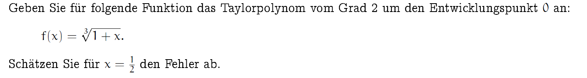
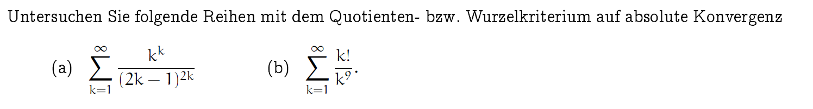

Übersicht
Das Modul "Mathematik 2" erweitert die Grundlagen aus Mathematik 1 und vertieft das Wissen in Bereichen wie Folgen, Differentialrechnung, Integralrechnung und Wahrscheinlichkeitstheorie.
Inhalte
- Einführung in Grenzwerte und Differenzenrechnung.
- Vertiefung der Integralrechnung und Integrationstechniken.
- Berechnung von Summen und Reihen.
- Anwendung der Wahrscheinlichkeitsregeln auf reale Beispiele.
Ablauf
- Einführung in Grenzwerte und Differenzenrechnung.
- Vertiefung der Integralrechnung und Integrationstechniken.
- Berechnung von Summen und Reihen.
- Anwendung der Wahrscheinlichkeitsregeln auf reale Beispiele.
Ziele des Moduls
Das Modul vermittelt den Studierenden ein tiefergehendes Verständnis mathematischer Konzepte und deren Anwendung in Informatik und Naturwissenschaften. Ziel ist es, analytische Fähigkeiten zu stärken und mathematische Methoden in Problemlösungen zu integrieren.
Beispiel
Eines der Kommunikationsmodelle


